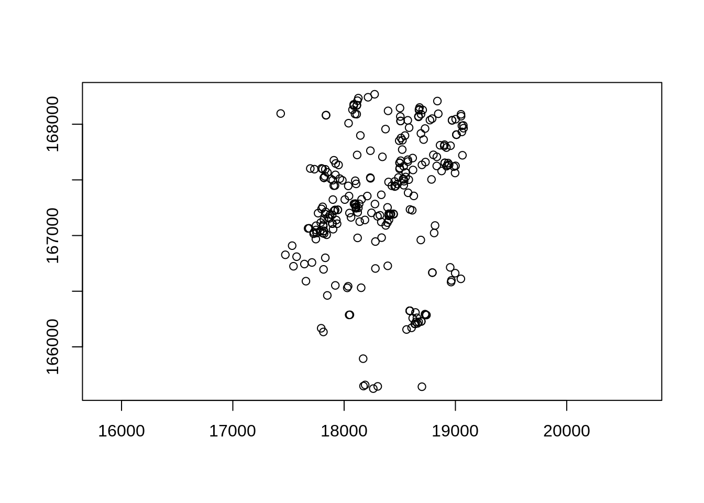
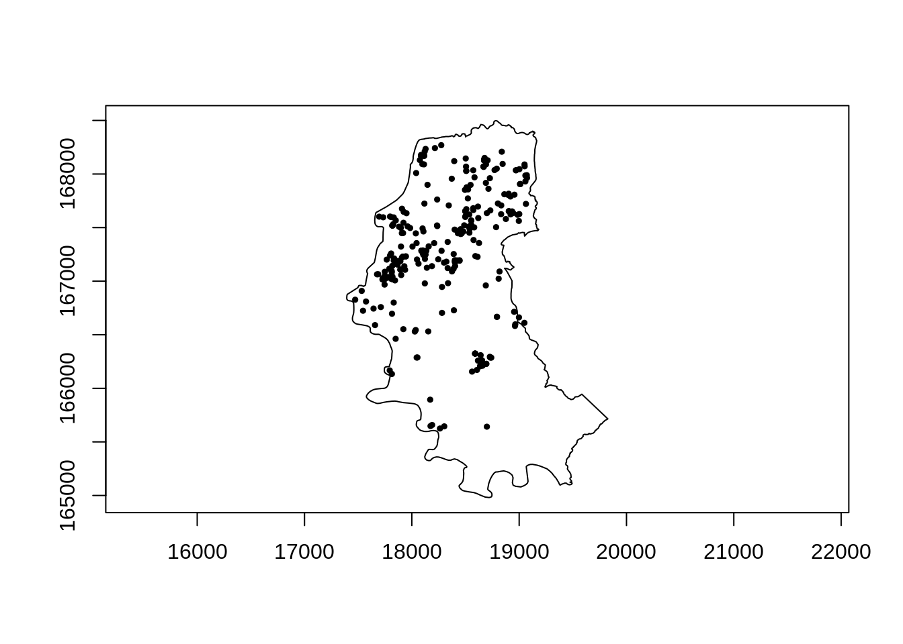

7 Padrões Pontuais
7.1 O que são Padrões Pontuais ?
Os Padrões Pontuais, é o tipo mais simples de de dados espaciais. São baseados localização dos eventos em determinada área a partir das coordenadas;
Os processos pontuais são definidos como um conjunto de pontos irregularmente distribuidos em um terreno cuja localização foi gerada por algum mecanismo estocástico;
Os pontos são pares de coordenadas (x, y), representando eventos, observação, indivíduos, lugares ou qualquer outro objeto discreto definido no espaço.


7.2 Objetivos
Estudar a disposição espacial dos pontos, a partir de suas coordenadas;
Uma caracterı́stica importante de um padrão espacial é a localização dos pontos e a relação entre eles.
Isto têm um efeito significativo na distribuição dos padrões;
Na realidade o que se deseja é detectar padrões de aglomerados espaciais (“clusters”).


7.3 Tipos de Distribuições
Aleatória, qualquer ponto tem a mesma probabilidade de ocorrer em qualquer local e a posição de qualquer ponto não é afetada pela posição de qualquer outro ponto;
Uniforme: cada ponto é tão longe de todos os seus vizinhos quanto possível;
Cluster: Muitos pontos estão concentrados juntos, e grandes áreas que contêm pouquíssimos pontos, se houver algum.

7.4 Processos pontuais
Os processos pontuais são definidos como um conjunto de pontos irregularmente distribuídos em um terreno, cuja localização foi gerada por um mecanismo estocástico.
Para sua caracterização, este processo estocástico pode ser descrito como:
- Processo de primeira ordem, considerados globais ou de larga escala, correspondem a variações no valor médio do processo no espaço.
- Mensuração da intensidade baseado na densidade (média dos eventos) na área de estudo (ex: Estimativa de Kernel).
- Processo de segunda ordem, denominados locais ou de pequena escala, é o processo representado pela interação entre dois pontos arbitrários.
- Mensurando a dependência espacial - baseado na distância entre os ponto (ex: Vizinhos mais próximos, Função K).
7.5 Processo de primeira ordem
7.5.1 Testando a Completa Aletoriedade Espacial (CSR - complete spatial randomness)
\(H_0\): Os pontos estão distribuidos aleatoriamente no espaço
\(H_1\): Os pontos formam clusters ou estão dispersos no espaço
CSR assume que os pontos seguem um processo homogênio de Poisson na área de estudo.
A densidade dos pontos é constante homogênea) ao longo da área de estudo;
Para uma amostra aleatória de subregiões, a distribuição da frequência do numero de pontosem cada região seguira uma distribuição de poisson;
O número de pontos em uma dada subregião e o mesmo para todas as subregiões na área de estudo;
O número de pontos na subregião, independe do número de pontos em qualquer outra subregião.
- Simulando alguns padrões dos dados de ponto, temos o seguinte:
library("spatstat")
aleatorio <- rpoispp(50)
regular <- rMaternII(200, 0.1)
agregado <- rMatClust(5, 0.05, 10)
par(mfrow = c(1, 3))
plot(aleatorio, main = "Aleatório")
plot(regular, main = "Regular")
plot(agregado, main = "Agregado")
- Verificando a distribuição dos pontos por quadrantes
aleatorioQ <- quadratcount(aleatorio, nx = 4, ny = 4)
regularQ <- quadratcount(regular, nx = 4, ny = 4)
agregadoQ <- quadratcount(agregado, nx = 4, ny = 4)
par(mfrow = c(1, 3))
plot(aleatorioQ, main = "Aleatório")
plot(aleatorio, add = TRUE)
plot(regularQ, main = "Regular")
plot(regular, add = TRUE)
plot(agregadoQ, main = "Agregado")
plot(agregado, add = TRUE)
- Testando a CSR
Chi-squared test of CSR using quadrat counts
Pearson X2 statisticdata:
X2 = 14.286, df = 15, p-value = 0.992
alternative hypothesis: two.sided
Quadrats: 4 by 4 grid of tiles
Chi-squared test of CSR using quadrat counts
Pearson X2 statisticdata:
X2 = 234.55, df = 15, p-value < 2.2e-16
alternative hypothesis: two.sided
Quadrats: 4 by 4 grid of tiles
Chi-squared test of CSR using quadrat counts
Pearson X2 statisticdata:
X2 = 8.2121, df = 15, p-value = 0.17
alternative hypothesis: two.sided
Quadrats: 4 by 4 grid of tiles
7.5.2 Estimativa de Kernel
Uma análise exploratória de um processo pontual começa pela estimação da intensidade de ocorrências do processo em toda a região em estudo. Com isso, gera-se uma superfı́cie cujo valor é proporcional à intensidade de eventos por unidade de área;
O estimador Kernel é um interpolador, que possibilita a estimação da intensidade do evento em toda a área, mesmo nas regiões onde o processo não tenha gerado nenhuma ocorrência real.
O objetivo é de estimar a intensidade do processo pontual \(=\) numero de eventos por unidade de área
\[\lambda(s) = \sum\limits_{i=1}^{n} \dfrac{1}{\tau^2} K (\frac{(s - s_i)}{\tau}) \nonumber\]
Sendo:
A função \(K(\bullet)\Rightarrow\) FDP, escolhida de forma adequada para construir uma superfície contínua sobre os dados;
O parâmetro \(\tau\) denominado “largura de banda ou faixa”" (bandwidth), controla o amaciamento da superfície gerada;
\(s\) representa uma localização qualquer na área de estudo e \(S_i\) são as localizações dos eventos observados;
\(n\) representa o número de pontos (eventos).


par(mfrow = c(1, 3))
plot(density(aleatorio, bw = 0.1), main = "Aleatório")
plot(aleatorio, add = TRUE)
plot(density(regular, bw = 0.1), main = "Regular")
plot(regular, add = TRUE)
plot(density(agregado, bw = 0.1), main = "Agregado")
plot(agregado, add = TRUE)
7.6 Algumas funções kernel \(K(\bullet)\):
Gaussiano;
Triangular;
Uniforme;
Quártico;
Etc.

7.7 Diferenças entre as funções de Kernel
A distribuição normal pesa os pontos dentro do círculo de forma que pontos mais próximos são pesados mais intensamente comparados aos mais afastados;
A distribuição uniforme pesa todos os pontos dentro do círculo igualmente;
A função quártica pesa pontos próximos mais do que pontos distantes, mas o decrescimento é gradual;
A função triangular pesa pontos próximos mais do que pontos distantes dentro do círculo, mas o decrescimento é mais rápido;
A função exponencial negativa pesa pontos próximos muito mais intensamente do que pontos distantes.
–
7.8 Função G - Distância do vizinho mais próximo
O método do vizinho mais próximo estima a função de distribuição cumulativa \(\hat{G}(r)\) baseado nas distâncias \(h\) entre eventos em uma região de análise.
Esta função de distribuição pode ser estimada empiricamente da seguinte forma:
\[\hat{G}(h) = \dfrac{\#(d(u_{i},u_{j}) \leq h)}{n}\]
onde o valor normalizado acumulado para uma distância \(h\) corresponde à soma dos vizinhos mais próximos de cada evento cuja distância é menor ou igual a \(h\), dividido pelo número de eventos na região.
A plotagem dos resultados desta função de distribuição cumulativa empírica \(\hat{G}(r)\) pode ser usada como um método exploratório para se verificar se existe evidência de interação entre os eventos. Se esta plotagem apresentar um crescimento rápido para pequenos valores de distância, esta situação aponta para interação entre os eventos caracterizando agrupamentos nestas escalas. Se esta plotagem apresentar valores pequenos no seu início, e só crescer rapidamente para valores maiores de distância, esta situação aponta para uma distribuição mais regular.
par(mfrow = c(1, 3))
plot(Gest(aleatorio), main = "Aleatório")
plot(Gest(regular), main = "Regular")
plot(Gest(agregado), main = "Agregado")
Embora o método do vizinho mais próximo forneça uma indicação inicial da distribuição espacial, ele considera apenas escalas pequenas. Para se ter informação mais efetiva para o padrão espacial em escalas maiores, o melhor método a ser utilizado é o da função \(K\).
7.8.1 Função K de Ripley (ou apenas função K).
A função \(K\), também denominada medida de momento de segunda ordem reduzido, é definida para o processo univariado como: \(\lambda K(h)\) = \(E(\#\)eventos contidos a uma distância h de um evento arbitrário\()\), sendo \(\#\) associado ao número de eventos, \(E()\) é o operador de estimativa, e \(\lambda\) é a intensidade ou número médio de eventos por unidade de área, assumida constante na região. Uma estimativa de \(K(h)\) é:
Tá errado, pegar no livro estatística espacial \[\hat{K}(s) = \frac{A}{n^2}\sum_{i=1}^{n}\sum_{i \neg j}w_{ij}^{-1} | {x_j : d(x_{i}, x_{j})}\]
Função K de Ripley conta quantos pontos há em círculos em torno de uma planta focal;
Os círculos começam com um raio pequeno e vão até um raio que inclui toda a área de estudo;
faz-se uma média do número de pontos nas classes de distâncias em torno de todas as plantas focais da população.

- A distribuição é cumulativa e representa o no esperado de vizinhos em um círculo de raio t centrado em uma planta arbitrária dividido pela intensidade λ do padrão dos pontos na área de estudo;
Possíveis resultados:
quando o processo é completamente aleatório, a curva se desvia relativamente pouco de \(\pi r²\). A curva \(K\) permanece perto de o valor de referência \(\pi r²\);
no caso de um processo regular, obtemos: \(\hat{K}(r) < K_{pois}(r)\) porque se os pontos forem repulsivo, eles têm menos vizinhos em média em um raio \(r\) do que teriam baseado no pressuposto de uma distribuição aleatória de pontos. Graficamente, a curva K reflete isso repulsão: vemos no gráfico à direita que a curva K está localizada abaixo da referência valor (\(\pi r²\));
no caso de um processo agregado, há em média mais pontos em um raio \(r\) ao redor os pontos do que o número esperado sob uma distribuição aleatória: conseqüentemente, os pontos atraem um ao outro e \(\hat{K}(r) > K_{pois}(r)\). Graficamente, a curva \(K\) está neste momento localizada acima da valor de referência para todas as áreas de estudo.
aleatorioK <- Kest(aleatorio)
agregadoK <- Kest(agregado)
regularK <- Kest(regular)
par(mfrow = c(1, 3))
plot(aleatorioK, main = "Aleatório")
plot(regularK, main = "Regular")
plot(agregadoK, main = "Agregado")